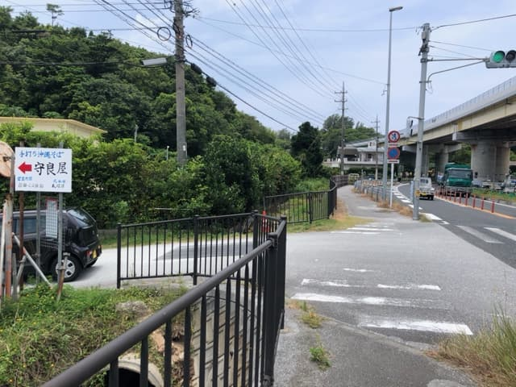
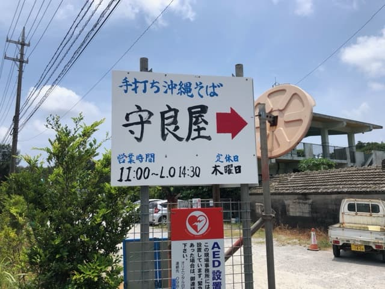
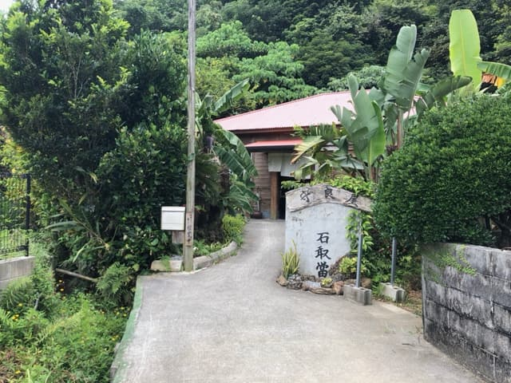
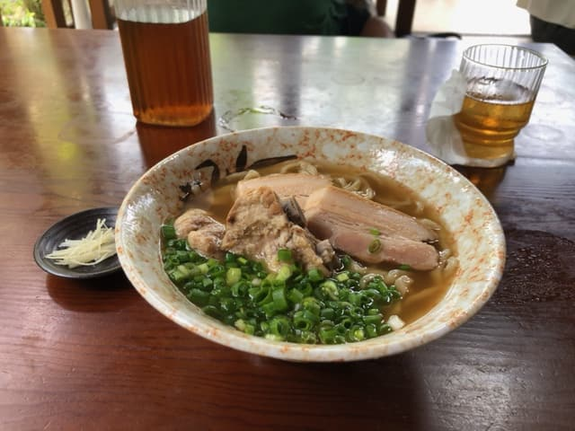

名護市許田の国道58号を走っていると、手作りの看板で「手打ち沖縄そば 守良屋」とあるのが気になっていて、ついに2023.7に食べに行きました😊



メニュー表は無く、建物の壁にそばのメニューが貼られていました。
国道から細い集落内の道路からアクセスするため、ひっそりとした場所ですが、店内は地元客や観光客でいっぱい(・・)
私は相変わらずのノーリサーチで入ってみましたが、人気店だと思います。
店名と同じ「守良屋そば」を注文。ノーリサーチのため、漢字の読み方が分からず、注文時に「もりよし屋そばお願いします」と注文してしまいましたが、普通に注文出来ました(^_^;) 食後にぐぐったら、「すろーやー」と読むんですね(^_^;)

店内の壁に「化学調味料不使用」の張り紙が。結構、自然な材料で作ることにこだわっている印象を受けました。
まずはスープをひとのみ。鰹だしがあっさり系で効いた優しい味で普通に上手い😋 麺は自家製手打ち麺で、縮れの平麺。見た目はつやがある感じで美味しそう。食べてもやや腰がある感じで、こちらも普通に上手い😋
具は軟骨ソーキと本ソーキが入っていて、どちらもプルプルで柔らかい😄 味付けは優しいあっさり系で他店のような味がしっかり染み込んだタイプとは異なる感じでした。
評価（9.5点/15点）：「化学調味料不使用」といった材料にこだわりのあるお店ですね😄 ヘルシーな沖縄そばが好きな方は如何でしょうか？
食べたときは梅雨明けした超暑いお昼の時間帯でしたが、古民家の自然で味わうのをコンセプトにしているのか、お店の窓は全開オープンの扇風機のみで、クーラーはかかっていません(^_^;) みなさん汗かきながら食べる感じで、こちらのある意味ヘルシーでした😁
麺 ：★★★✬☆（3.5）
スープ：★★★☆☆（3）
具 ：★★★☆☆（3）